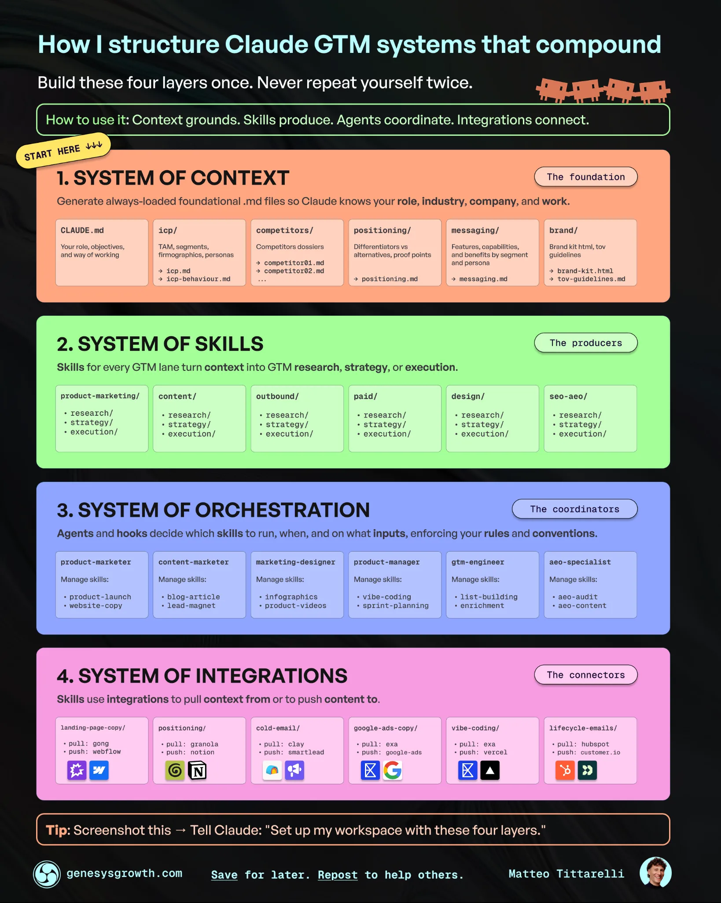
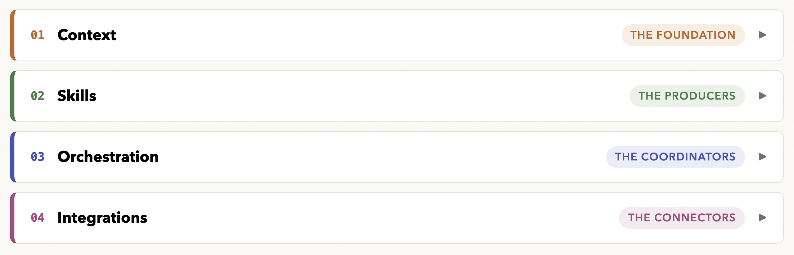

An AI marketing system that doesn't start from scratch
Tools: Claude Code · Python · GA4 · Search Console · Google Ads · Clarity · Leadfeeder · Notion
What it is: A GTM system where Claude already knows our company, customers, and competitors, with context that carries between sessions.
01Why I built it
Working in enablement, I'm often faced with problems around scale. How do I scale an onboarding program to handle the increasing headcount? How do I scale sales best practices across multiple teams? How do I scale the creation of strategic content?
As I get more immersed in using AI, a new opportunity for scale has started to emerge.
How do I scale my impact in a way that previously wasn't possible?
The answer, like many of my enablement solutions, is to create a system. What's interesting about using AI to do this is that I'm now able to have an impact on parts of the business that I would otherwise have no ability to influence.
The idea and framework for this project were sparked by Matteo Tittarelli's article "How to build your AI GTM system". In it, he breaks down how to create an AI GTM workspace into four layers:
- Context
- Skills
- Orchestration
- Integrations

While the approach is adjacent to traditional sales enablement work, I decided to try his framework because I had already built many of the elements through the Marketing Ops work I've been tackling. I work on a lean revenue enablement team, and we don't have some of the traditional marketing roles you might find on other teams.
The goal was to create a system that would:
- Reduce the context I needed to provide in my prompts
- Standardize the approach to repeatable tasks with skills
- Orchestrate the execution with specialized agents
- Pull in relevant data/insights from integrated tools
This would enable me to create higher-quality outputs faster, without having to start from scratch every time.
02What I built
An AI GTM operating system with four layers.
Context is the foundational layer. I've built markdown files that cover the company, our ideal customer, our services, messaging by persona, and brand voice. These files are automatically loaded, so every session starts from the same foundation.
Skills are the standard operating procedures that combine the context from the foundational layer with the prompt. They include marketing skills that write copy, audit content, or optimize ads. They are tools that the agents can use to solve problems.
Agents can reason, use tools, and take feedback to improve their reasoning. The system currently has four of them, one per marketing lane (product marketing, content, paid ads, SEO).
Integrations connect the agents to data sources. This shapes where they go to pull information and ensures that they are working with live data. I won't outline our entire stack, but they have access to a handful of analytics and data enrichment tools, including GA4 and Google Search Console.

03How it works
The decisions mattered more than the files.
Audit before building. My first instinct was to create everything new. The audit showed three of the four layers half-built already: a brand voice guide, audience research, working API scripts. Most of the project was consolidation, not creation. The genuinely new work was one layer (the agents) and the connective tissue.
One glue file. The marketing skills all read a single condensed context file. That file mirrors the full context folder, which means two sources of truth that can drift apart. I accepted that tradeoff deliberately, because the skills read a fixed path, and made syncing them a written rule of the system instead of something to remember.
Design for the leak. Some of our positioning comes from a confidential source. Instead of trusting anyone (including me) to remember which claims are public, the positioning file marks every claim as cleared, confirm first, or gated. Every agent is instructed to check the table before anything publishes. The system assumes the mistake will happen and blocks it, which is the same logic I'd apply to any enablement process.
Tell the researchers to be honest. The competitor research agents had one instruction that mattered more than the rest: be honest about competitor strengths, and mark unknowns as unknown instead of guessing. The dossiers came back with findings I didn't want but needed, including places where our favorite talking points don't land on a specific competitor.
04What broke & what I learned
I haven't run into any major issues yet, but I'm still early in my experimentation with the outputs.
One of the things I did overlook was that this system applies to anything I do in Claude that isn't related to work (such as writing this post). Funny enough, I realized this when I started working on this post. The WBM voice doesn't exactly match my own lol.
The fix was a scope rule that provides swim lanes based on the prompt: the company voice for company work, my voice for my own work, and a guideline to ask when it's ambiguous.
The second issue was that I realized the need for a clearance gate. Some of the content I used to create the context files has information that isn't approved to be shared externally. When I saw some of it showing up in the outputs, I added a clearance gate that flags potentially sensitive data as approved for external sharing, needing review, or not approved.
Overall, I'm very happy with this project. It's my first attempt at creating a proper harness for Claude, and I can notice a substantial difference in the quality of the outputs. There will be lots of tinkering to do with the context files and skills, but the foundation is in place.
The main thing I'll be on the lookout for is drift over time. The context files may calcify and become outdated. To try and prevent this, I plan to explore adding a feedback layer, but that will be part of a future project.
A future iteration could also involve figuring out how to build this in a way that gives my coworkers access to the same system.